Bees.
Nature’s factory workers. Pollinating powerhouses responsible for one-third of the global food supply.
Without bees, there would be no blueberries, almonds, avocados, or chocolate. We’d have no cherries, coffee, peppers, or pumpkins. We’d have almost no fruit at all. Insects pollinate 80% of all flowering plants in the world.
In the US alone, bees are responsible for $15 billion in agricultural production, including apples, pears, and melons.
In 2022, the global honey market was valued at over $9 billion, with primary uses in food, medicine, and cosmetics.
The relationship between humans and bees goes back centuries. Ancient Chinese, Greeks, and Maya all made references to bees and honey. Ancient Egyptians were well documented beekeepers, placing honey in tombs as an offering to the gods. European settlers were the first to introduce honey bees to the United States in the early 1600s.
But the relationship between bees and humans is under stress.
Bees are dying at an alarming rate.
Wild bees can no longer meet the needs of US food pollination. Farmers have turned to commercial beekeepers and managed hives of honey bees to replace native bees.
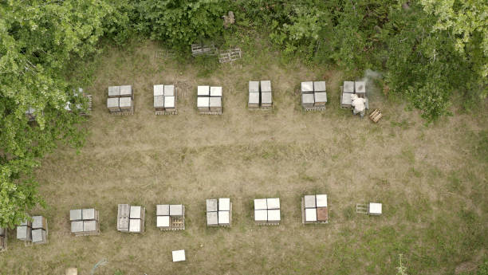
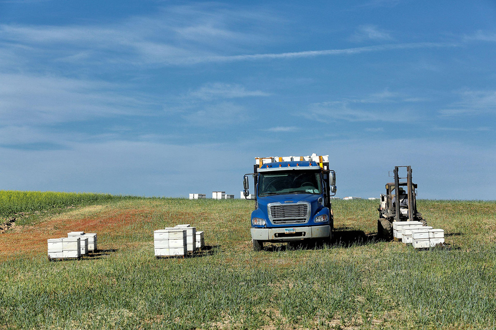
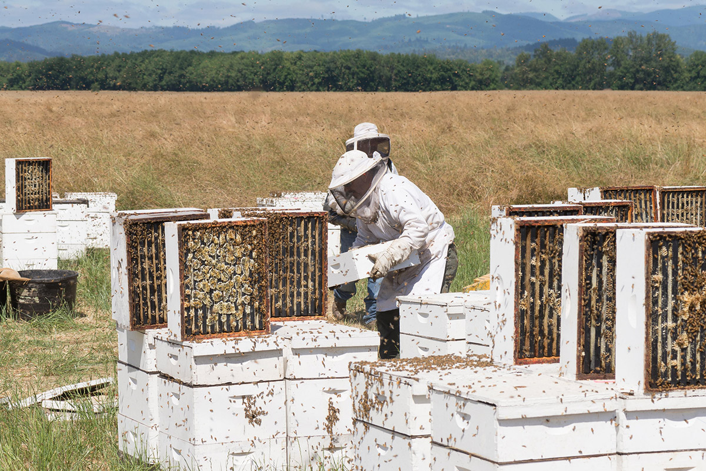
Each Spring, commercial beekeepers truck their hives to farms and orchards around the country to pollinate the US fruit crops. It’s grown into a $400 million a year industry. What was once a free service carried out by wild bees is now a job for hire.
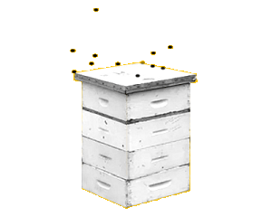
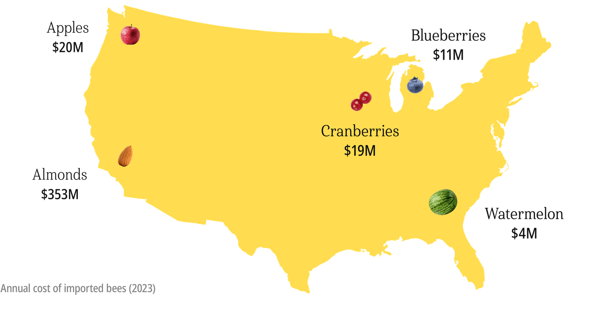
Importing honey bees harms wild bee populations even more. Honey bees are voracious foragers. When a large number of honey bees are imported into an area, they overgraze the flowers, leaving nothing for wild bees. The wild bee population dwindles, and the area becomes more reliant on imported bees to pollinate.
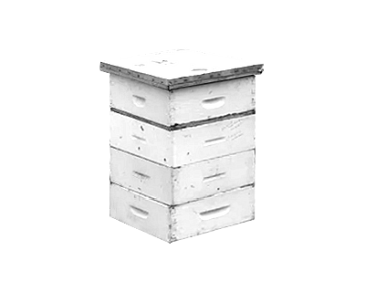
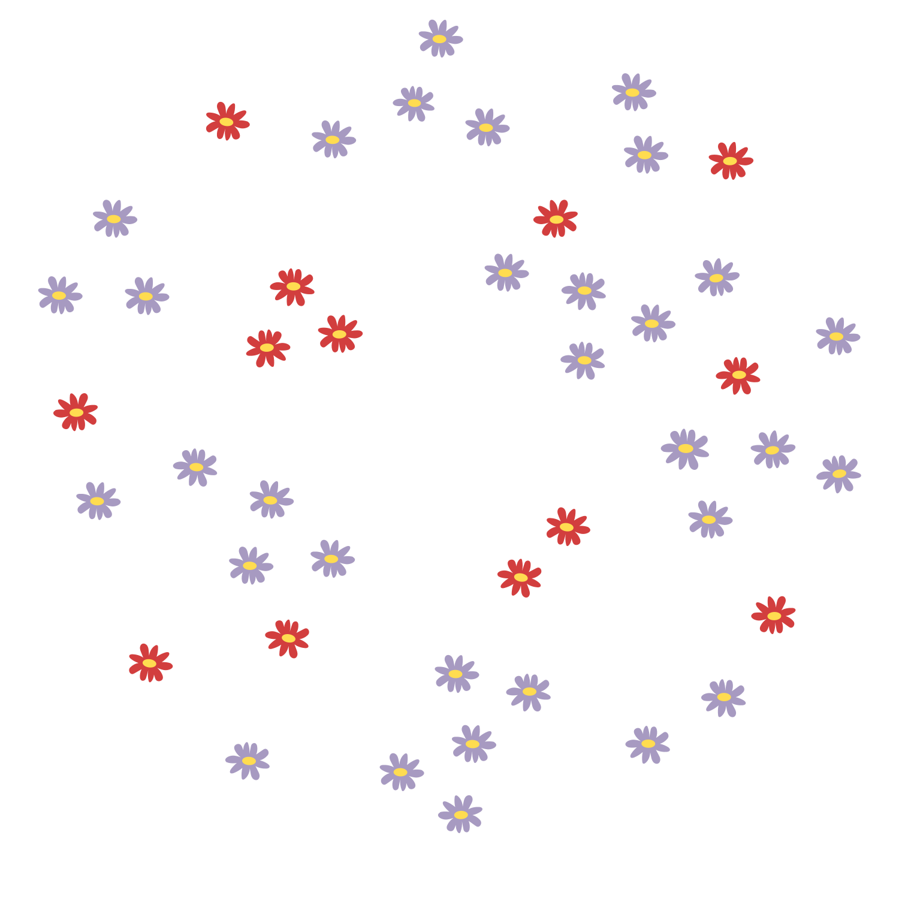
There are over 4,000 wild bee species in the US, and most are in decline. Non-native honey bees are outcompeting wild bees, which is bad for nature. Relying on only one species to pollinate crops limits the diversity and stability of the global food supply.
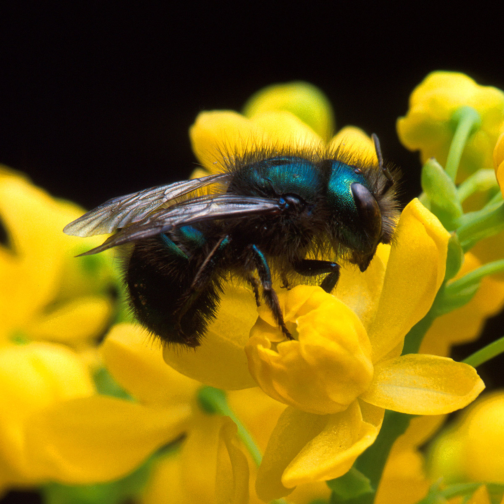
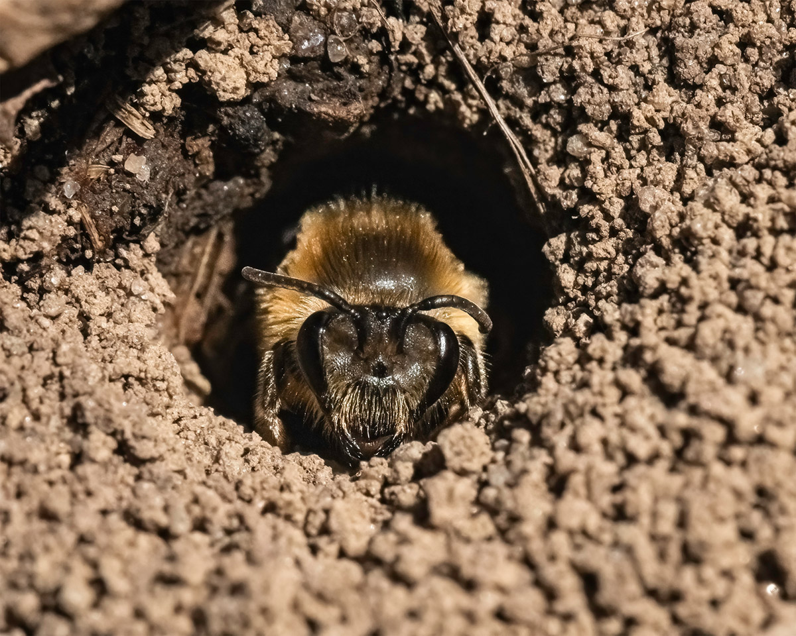
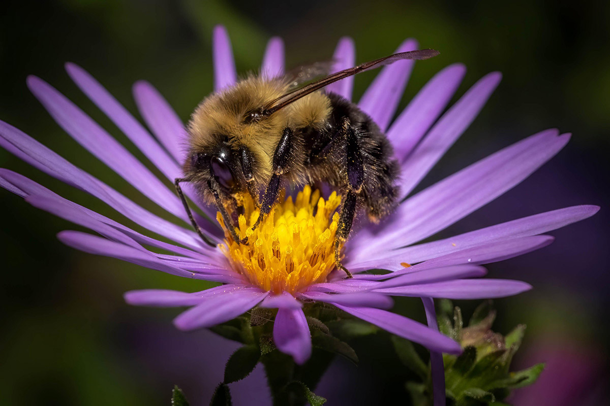
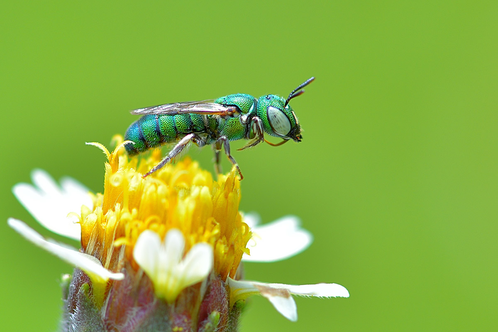
The honey bee population is not endangered but it’s not healthy either. Beekeepers lose 40-50% of their colonies every year to parasites, diseases, pesticides, and extreme weather. Only through aggressive breeding can beekeepers maintain a population high enough to pollinate crops. It’s a fragile system.
The bees need help our help. We need to protect their habitats and food sources, especially those of wild bees. Here are some things you can do:
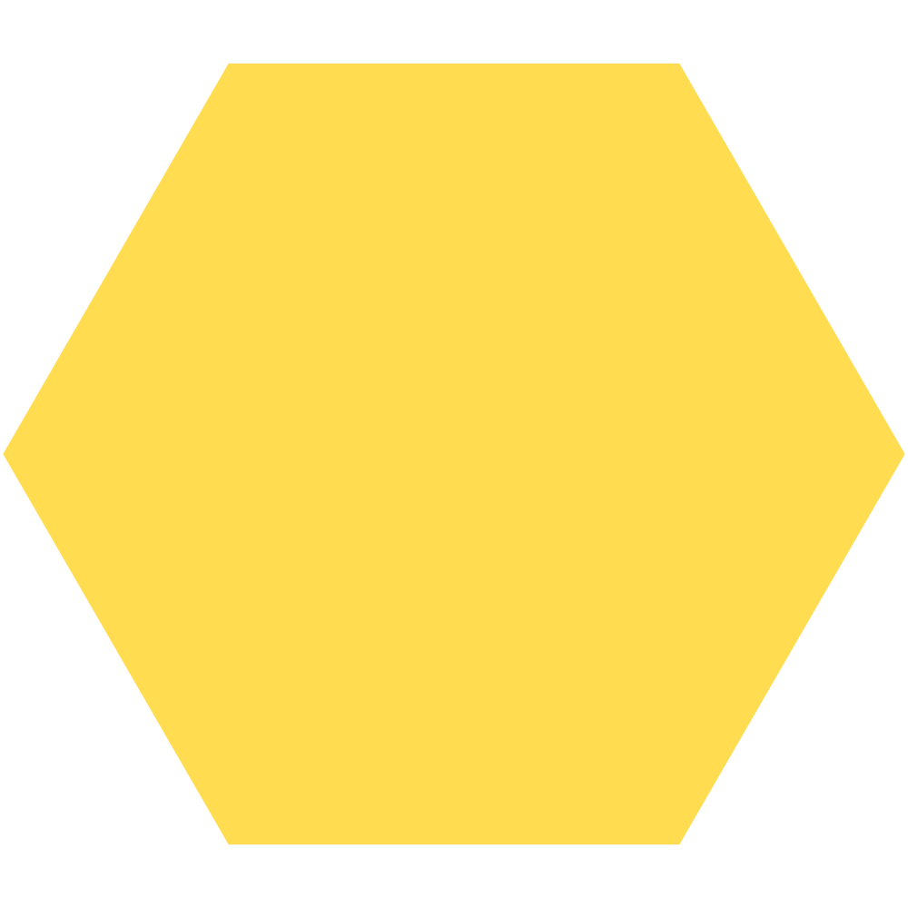
Plant native flowers. Choose a mix of flowers that bloom at different times of the year to provide a constant food source.
Stop using chemical pesticides and herbicides. Choose organic fertilizers and natural pest management options.
Leave a portion of your yard unmowed and unraked. Nearly 70% of bee species nest underground.
Bees have been providing for us for millions of years. Their rapid decline in the last 50 years is cause for concern. There is a saying, “No bees. No food.” We simply cannot survive without them.
This website was created in 2025 by Ink & Craft, a graphic design studio helping organizations tell unique stories in creative ways.